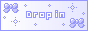
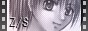
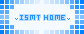
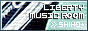

| 管理人まやさんの素材サイト様。とても可愛くてシンプルな素材が 沢山あります！惚れます！当サイトはバナーを使わせて頂きました。 |
 | 管理人はりゅさんの素材サイト様。数多くのフォントがあり、しかも素敵ｖ きっとお目当てのフォントと出会えるはずです。 |
| 管理人ecliさんのテーブルサイト様。シンプルで使い勝手の良いテーブルが豊富です。当サイトでもテーブルを使用させて頂きました。 | |
| 管理人りゅうかさんの素材サイト様。CGの美しさと細かさが見事です。当サイトは壁紙を使わせて頂きました。 | |
| 管理人UikaDollさんのイラスト素材サイト様。とにかくスタイリッシュな女の子のイラストがカッコイイ！ | |
| 管理人篁 龍沙さんの素材サイト様。炎系の素材が主で、幻想的な雰囲気がとても素敵です。当サイトは壁紙を使用させて頂いてます。 | |
| 管理人空架さんの素材サイト様。幻想的なCG素材が豊富で、当サイトは壁紙を大量に使わせて頂きました。是非一度訪問してみて下さい！ | |
 |
管理人あかるさんのオリジナル小説・イラストサイト様。管理人お気に入りのサイト様です。小説は読み出したら止まらないほどの素晴らしさ。 |
 |
管理人真河 涼さんのオリジナルMIDIサイト様。主にゲームBGM風の曲が多く、構成から雰囲気から全てが素晴らしくて、管理人は大尊敬しております。 |
| 管理人逆凪 諒さんのオリジナルMIDIサイト様。楽曲の種類が豊富で、一度聴いただけで耳に残るような素敵な曲ばかりです。管理人はかつてからのファンです。 | |
 |
管理人ISMTさんのHP作成講座。CGIやバナーも配布しています。すごくわかりやすい説明で、管理人は非常にお世話になりました。 |
 |
管理人shihoさんのゲーム系オリジナルMIDI・MP3サイト様。ゲーム系ミュージックが好きな人は是非！感動すること間違いありません。 |
 |
音楽総合サーチエンジンです。とにかく数がすごい！ジャンルも多様ですので、探している曲がきっと見つかるはずです。 |
| 管理人五樹りくさんのオリジナルイラスト・小説サイト様です。イラストがとっても可愛くて、一目惚れしますｖサイトデザインもすごく素敵です！ | |
| 管理人まめしばさんの、オリジナルイラストサイト様です。幻想獣が本当に可愛いｖ丁寧で繊細な線画が、とても綺麗です！ | |
| 管理人平治さんの、オリジナルイラストサイト様です。今まででこんなにも素晴らしいと思った絵はありません！色使いが物凄く美麗です。 | |
| 管理人ハルさんの、詩サイト様です。詩といっても１，２行の言葉達で、その短い中に全てが描かれていて見事です。本当に感激しました。心を打たれます。 | |
| 管理人みぃさんの、オリジナルMIDIサイト様です。あまりの迫力と丁寧な音に、本当に驚いたと共に大きな感動をおぼえました。サイトデザインも素敵です！ | |
| 管理人Noiさんの、写真素材サイト様です。洗練された素敵すぎる写真が沢山あります。固定方法なども教えてくれて、親切なサイト様です。 | |
| 管理人さとさんの、写真・グラフィック素材サイト様です。サイトデザインから素材から全てが綺麗で、感動しました。当サイトはバナーをお借りしました。 | |
| 管理人momoさんの、写真素材サイト様です。こちらの写真素材は本当に綺麗で、情緒あるものばかりです。HTML講座もあって、わかりやすいです。 | |
| 管理人橘 樹さんの、写真素材サイト様です。とにかく量と質がすごい！風景から雑貨から、多々の種類の写真がそれぞれ沢山あります。 | |
| 管理人銀之助さんの、写真素材サイト様です。使いやすい写真素材を沢山置かれています。素材でない写真も物凄く綺麗！ | |
| 管理人ソウシさんの写真素材サイト様です。青色を基調とした素材があります。サイトデザインから全てが素敵です。 | |
| 管理人黒曜さんの、写真・グラフィック素材サイト様です。素材も勿論ですが、「Photo」の世界観は一見の価値あり！ | |
| 管理人LizさんのオリジナルMIDIサイト様。主にオルゴールの音色が多く、切ない曲中心です。すごく丁寧で綺麗なメロディーが最高。 | |
| 管理人soraさんの、写真素材サイト様です。モノクロやセピアなどの写真がとても綺麗。素材というよりは一つの芸術のようです。 | |
| 管理人雨音さんの、写真素材サイト様です。サイトデザインもとても素敵で、すごくお手本になります。 |